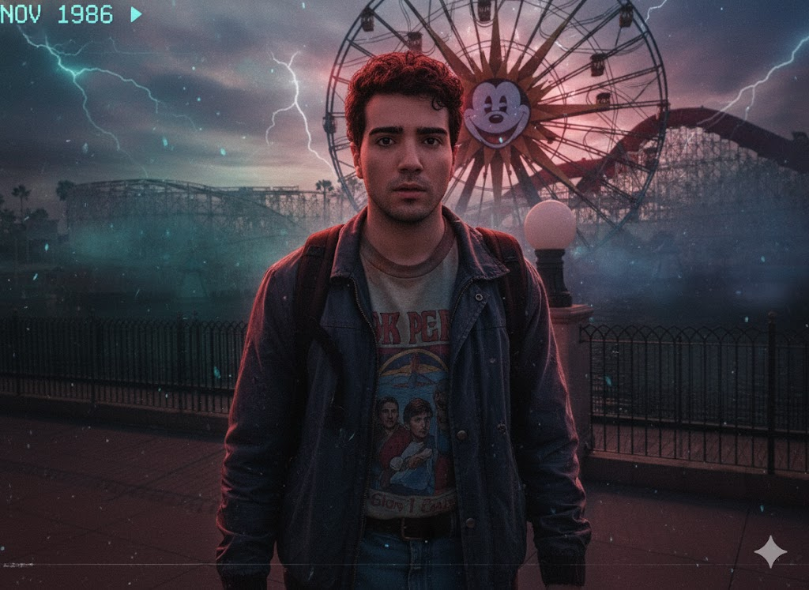

Bienvenidos al Mundo del Revés
Stranger Things es una serie de televisión estadounidense de suspenso y ciencia ficción creada por los hermanos Matt y Ross Duffer. Ambientada en los años 80 en el ficticio pueblo de Hawkins, Indiana, la serie narra la historia de la desaparición de un niño y los eventos sobrenaturales que ocurren a su alrededor.
Una combinación perfecta de misterio, horror, amistad y nostalgia que ha cautivado a millones de fans alrededor del mundo.